BLUELINE · gen-AI text on black — pick the keepers
ascension · title · the system / author · awe, dread, ascent "ASCENSION"
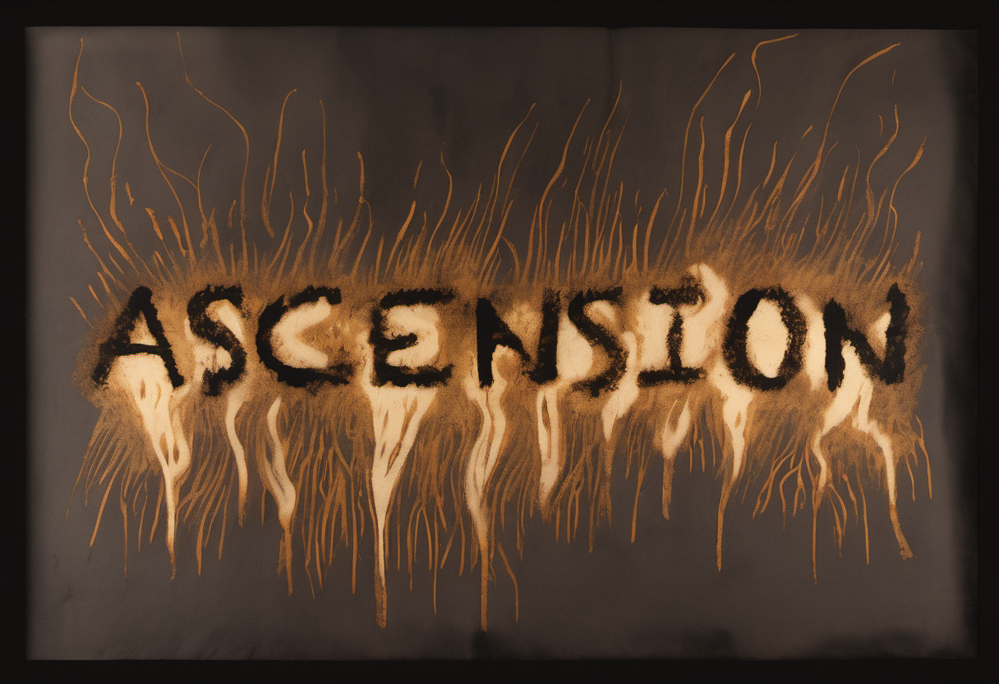
ascension_skeleton_s1111.pngshout-no · dialogue · the hero's mouth · fury, anguish (max intensity) "NO"
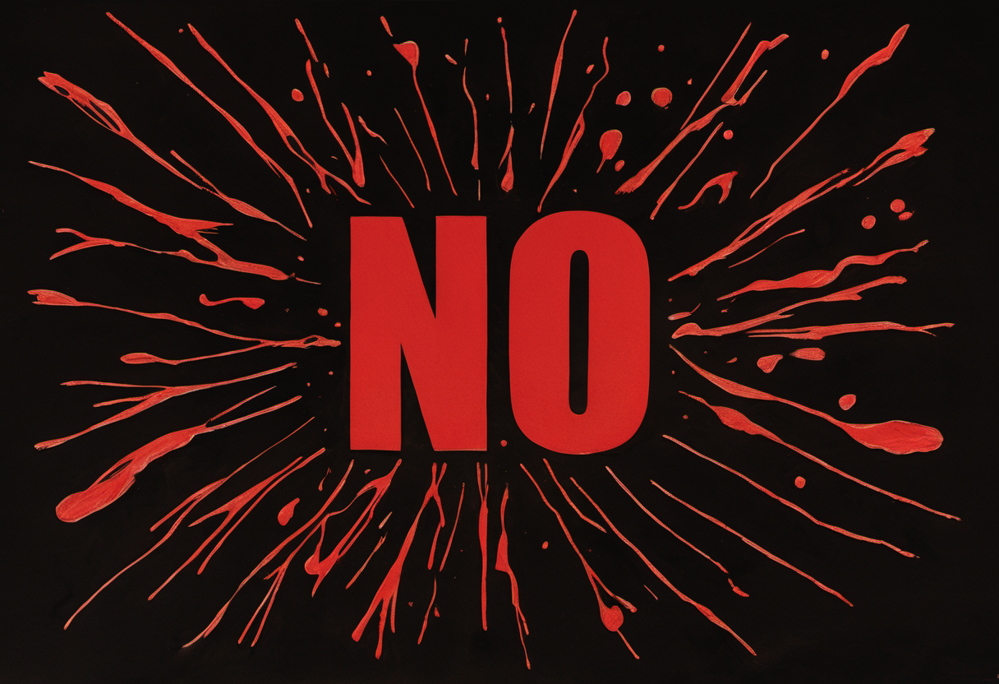
shout-no_skeleton_s1111.png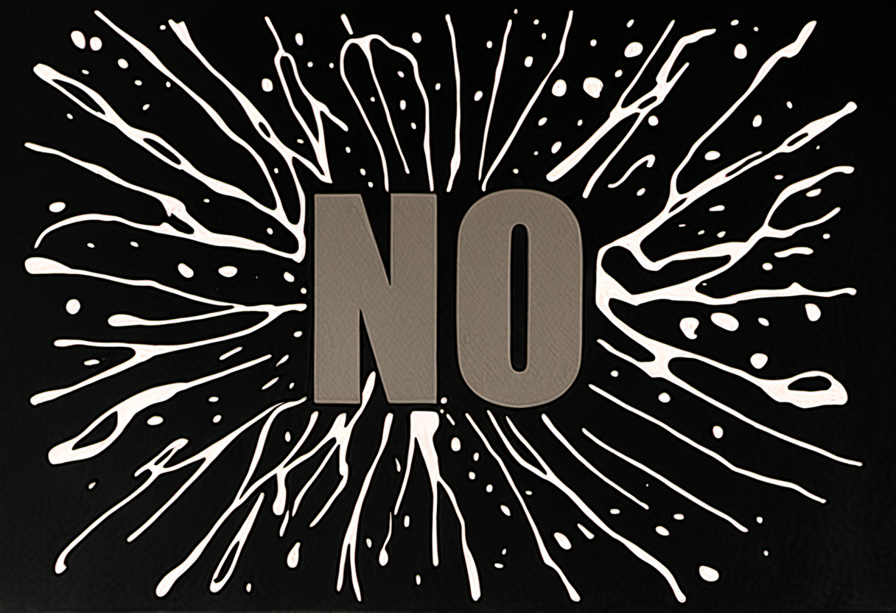
shout-no_stylize_s1111.pngwhisper-stay · dialogue · the dying woman's mouth · tenderness, fading (min intensity) "stay"
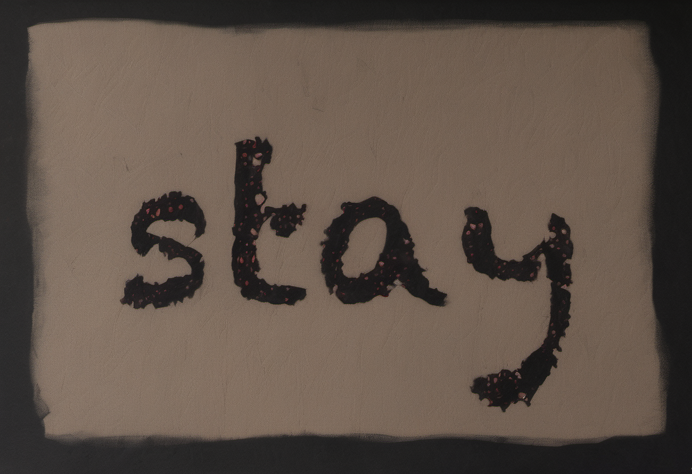
whisper-stay_skeleton_s1111.pngsfx-thoom · sfx · the impact / the world · concussive force "THOOM"
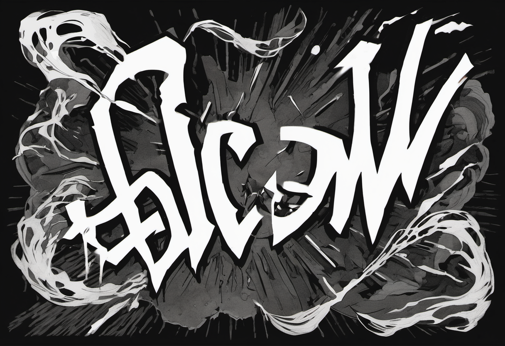
sfx-thoom_s1111.png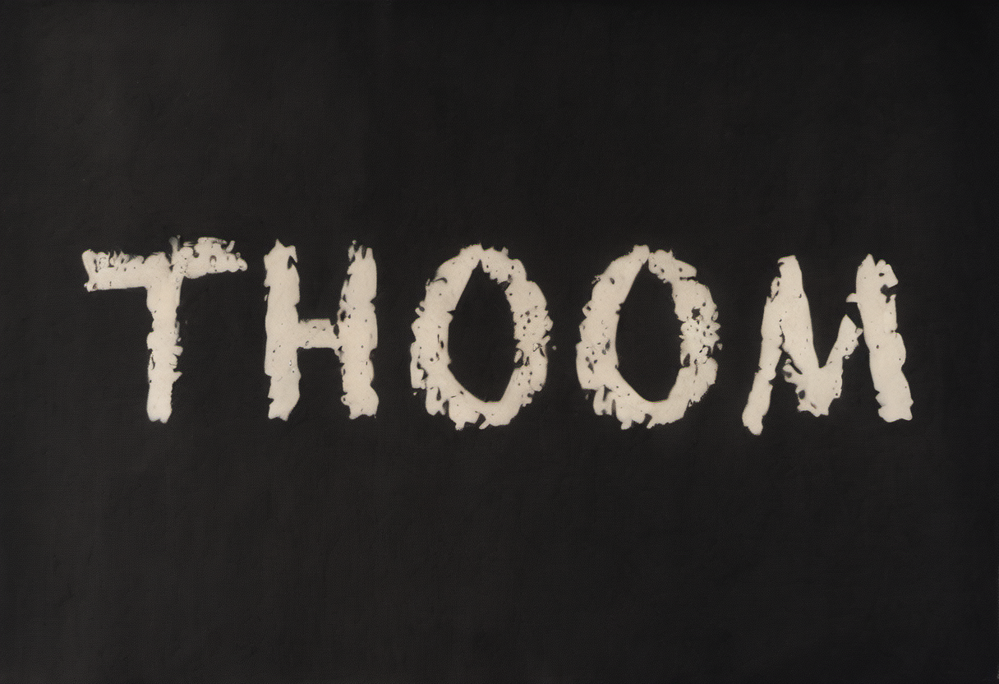
sfx-thoom_skeleton_s1111.pngdying-toolate · voiceover / interior · the hero, hollowed · grief, collapse, letting go "too late"
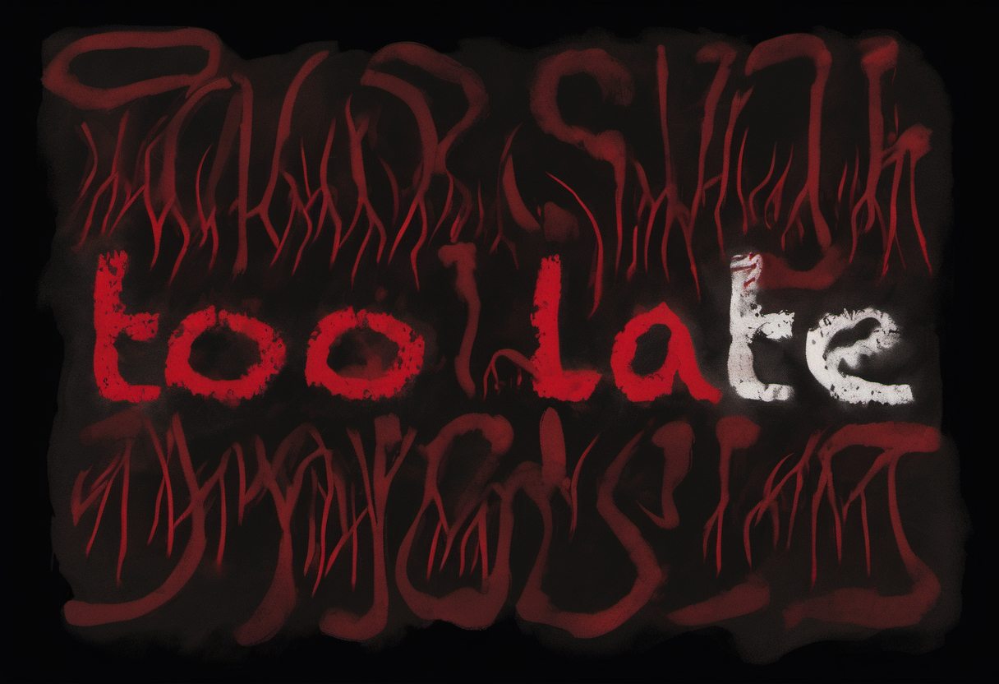
dying-toolate_skeleton_s1111.png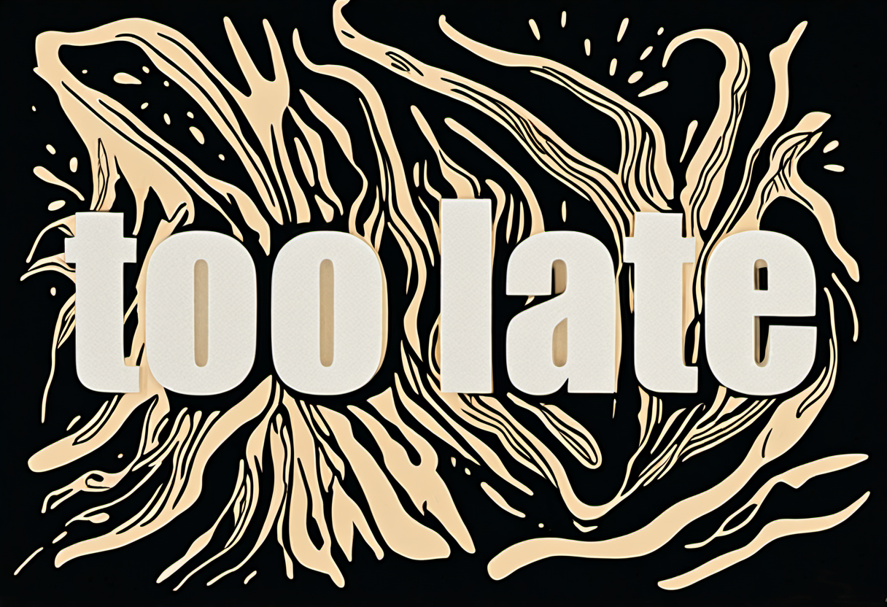
dying-toolate_stylize_s1111.pnglyric-burning · lyric · the song · longing, heat, rising "BURNING"
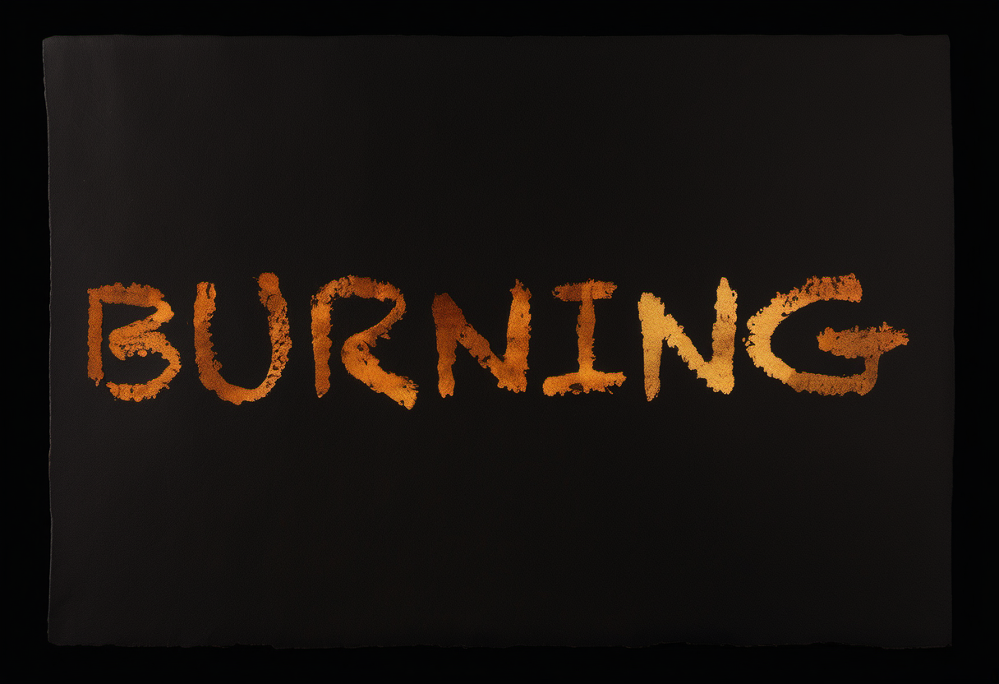
lyric-burning_skeleton_s1111.png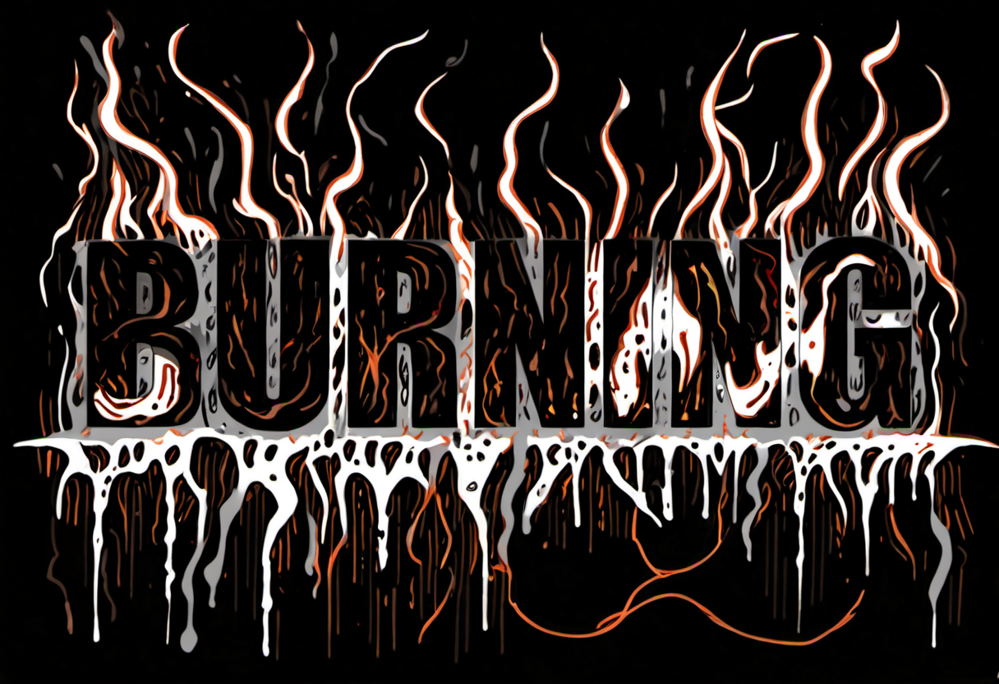
lyric-burning_stylize_s1111.pngthought-real · thought / interior · the hero's mind · doubt, dissociation, cold "was it real"
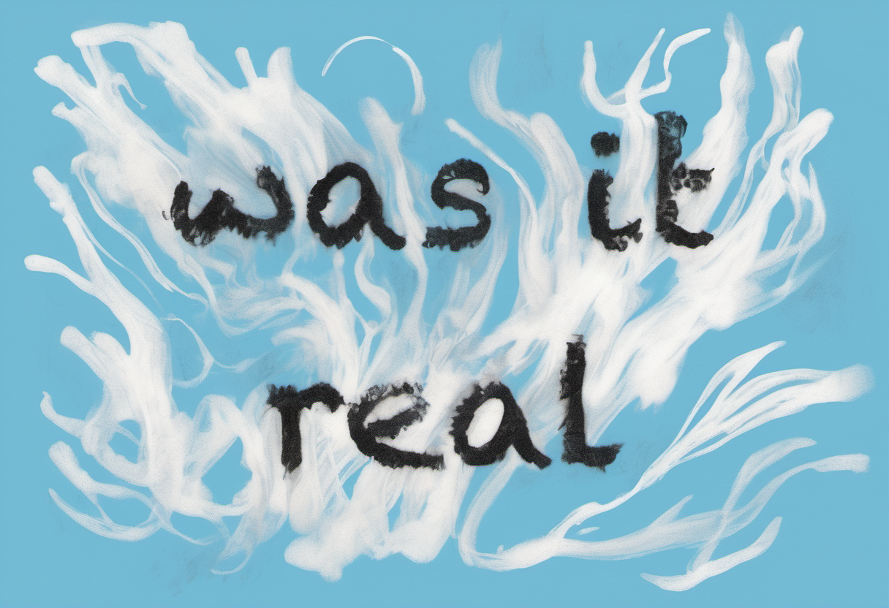
thought-real_skeleton_s1111.png